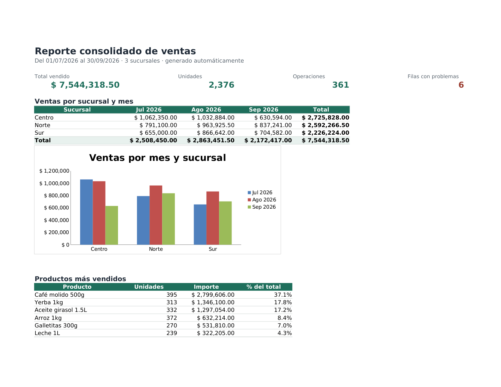
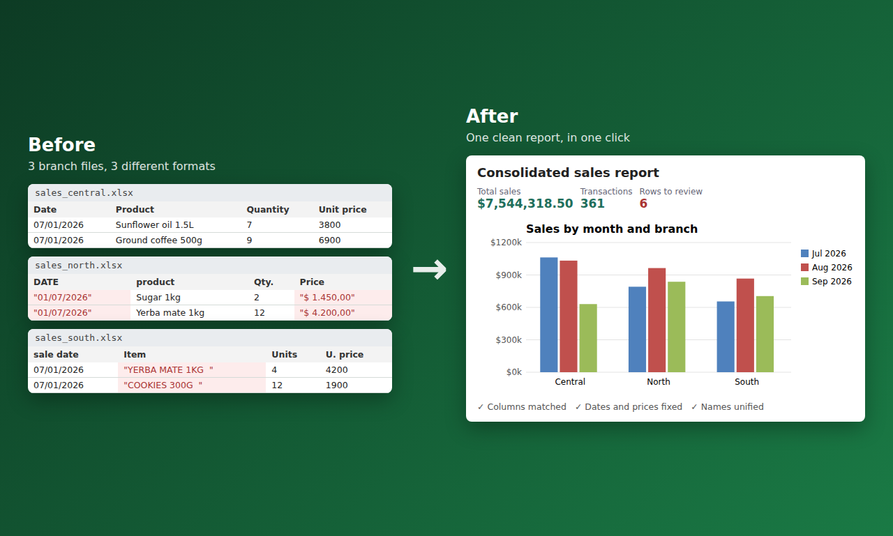
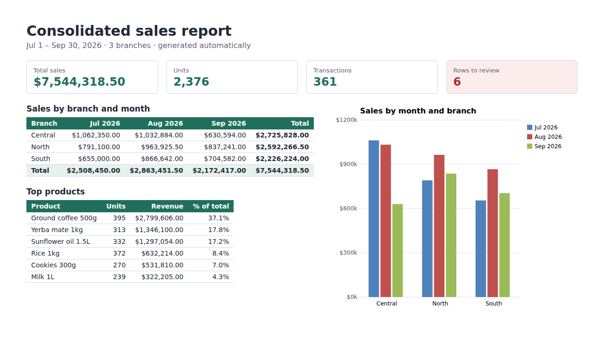

Tres sucursales mandaban sus ventas en planillas distintas: columnas con otros nombres, fechas como texto, precios como "$ 1.450,00" y productos escritos de formas diferentes. Un script en Python las junta, las limpia, aparta las filas con problemas y genera un único Excel con resumen, gráfico, detalle y una hoja de filas a revisar. Datos ficticios.


